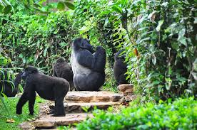
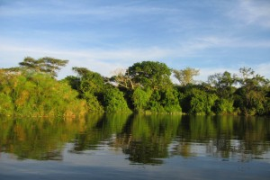
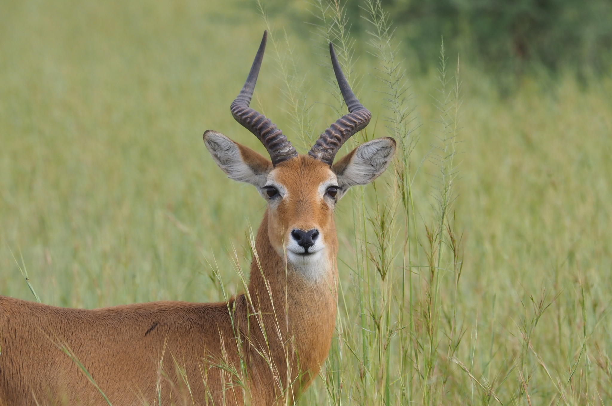

.jpeg)
Murchison Falls
Murchison Falls is Uganda’s largest and oldest conservation area. It is bisected by the Victoria Nile, which plunges 40 meters over the remnant rift valley wall, creating the dramatic Murchison Falls, the centerpiece of the park and the final event in an 80km stretch of rapids.
Read More
Mgahinga Gorilla
Tourists in Uganda enjoy classic wildlife safaris out on the savannah as well as close encounters with the great apes – chimpanzees and mountain gorillas.
Read More.jpeg)
Rwenzori Moutains
While Uganda enjoys warm sunny days all year round, the highest altitude in Uganda is covered by permanent glaciers. The Rwenzori Mountains, also called the mountains of the moon are a UNESCO World Heritage Site because of their astounding beauty
Read More
Lake Mburo Park
Lake Mburo National Park is often described as a compact little gem of wildlife. It is the closest, national park, to Kampala and can be reached in about 4 hours of driving along the Kampala – Mbarara Highway – just before reaching Mbarara.
Read More.jpeg)
Nyero Rock Paintings
The Nyeo rock paintings were first documented in 1913 and are believed to be older than 800 years.
Read More
Kidepo Valley Park
Kidepo Valley National Park is one of Africa’s purest Wildernesses. It is located in Uganda’s northeastern corner on the border with Kenya and South Sudan.
Read More
Queeen Elizabeth Park
Queen Elizabeth National Park is found in western Uganda and still stands as Uganda’s most popular savannah park. From the tree-climbing lions to the schools of hippos along the Kazinga channel, QENP is a top attraction worth visiting for all the rich wildlife.
Read More.jpeg)
Ssese Islands in Lake Victoria
The Ssese Islands are a group of more than 80 islands in lake Victoria, Uganda. The Islands are well-loved for their perfect beaches that call for an evening of relaxing and watching the sunset disappear in the distance.
Read More
Mt. Elgon National Park
Mount Elgon is the main physical feature of the Mount Elgon National Park and sits on the border that separates Uganda and Kenya. Rising to more than 4000 meters above sea level,
Read More
Sipi Falls, Kapchorwa
The Sipi Falls is a group of 3 waterfalls in Eastern Uganda, just outside the borders of the Mount Elgon National Park. They are probably the most popular waterfalls for Ugandans, because of the engaging hike through the local villages
Read More
Semuliki Nationl Park
Semulki National Park is the only park in Uganda that perfectly combines the ecosystems of Eastern Africa with those of Central Africa. This makes it a home for animals from both sides of the continent.
Read More
Bwindi Impenetrable National Park
Bwindi Impenetrable National Park is a renowned refuge for endangered mountain gorillas. Although it is not the only place where these incredible animals can be observed, it is the most popular destination for gorilla trekking.
Read More